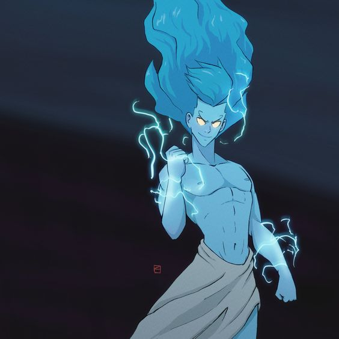
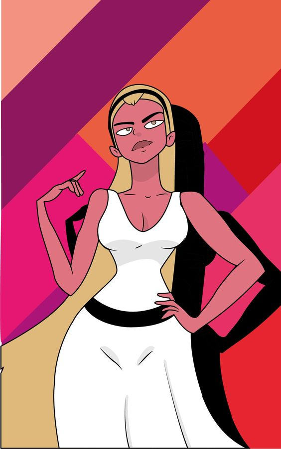
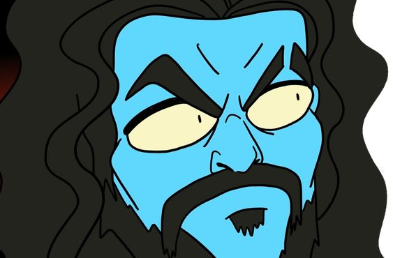
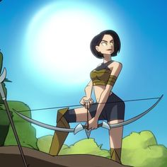
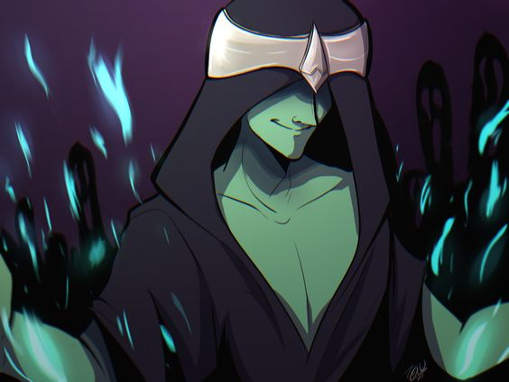

Información sobre los dioses griegos según Destripando la Historia
Zeus
Zeus es el rey de los dioses y gobierna el Monte Olimpo. Es el dios del cielo y el trueno. Es conocido por su infidelidad y sus muchos hijos con diferentes diosas y mortales. Su símbolo es el rayo.
Hera
Hera es la reina de los dioses y la diosa del matrimonio y la familia. Es la esposa de Zeus y es conocida por su carácter celoso y vengativo, especialmente hacia las amantes de Zeus y sus hijos. Su símbolo es el pavo real.
Poseidón
Poseidón es el dios del mar, los terremotos y los caballos. Es uno de los hermanos de Zeus y es conocido por su temperamento violento y su tridente, que utiliza para causar terremotos y tormentas en el mar.
Atenea
Atenea es la diosa de la sabiduría, la guerra estratégica y las artes. Nació completamente armada de la cabeza de Zeus. Es una de las diosas vírgenes y su símbolo es el búho, que representa la sabiduría.
Ares
Ares es el dios de la guerra, particularmente de su aspecto violento y sangriento. Es hijo de Zeus y Hera y es despreciado por los otros dioses debido a su naturaleza belicosa. Su símbolo es el casco.

Artemisa
Artemisa es la diosa de la caza, la naturaleza, la virginidad y la luna. Es la hermana gemela de Apolo y es conocida por su habilidad con el arco. Su símbolo es la luna creciente.
Hades
Hades es el dios del inframundo y de los muertos. Es uno de los hermanos de Zeus y es conocido por ser un dios sombrío y justo. Es el guardián de las almas de los muertos. Su símbolo es el casco de invisibilidad.
Afrodita
Afrodita es la diosa del amor, la belleza y la fertilidad. Nació de la espuma del mar y es conocida por su extraordinaria belleza. Su símbolo es la paloma.
Hermes
Hermes es el mensajero de los dioses, así como el dios del comercio, los ladrones y los viajeros. Es hijo de Zeus y Maia y es conocido por su astucia y velocidad. Su símbolo es el caduceo.
Dato curioso
Deméter, la diosa griega de la cosecha y la fertilidad, también es conocida como la diosa de las estaciones? Según la mitología, cuando su hija Perséfone fue secuestrada por Hades y llevada al inframundo, Deméter se sumió en una profunda tristeza. Durante el tiempo que Perséfone pasaba en el inframundo, la tierra se volvía estéril, causando el invierno. Cuando Perséfone regresaba con su madre, la tierra florecía nuevamente, trayendo la primavera y el verano. Este mito explica el ciclo de las estaciones en la antigua Grecia.